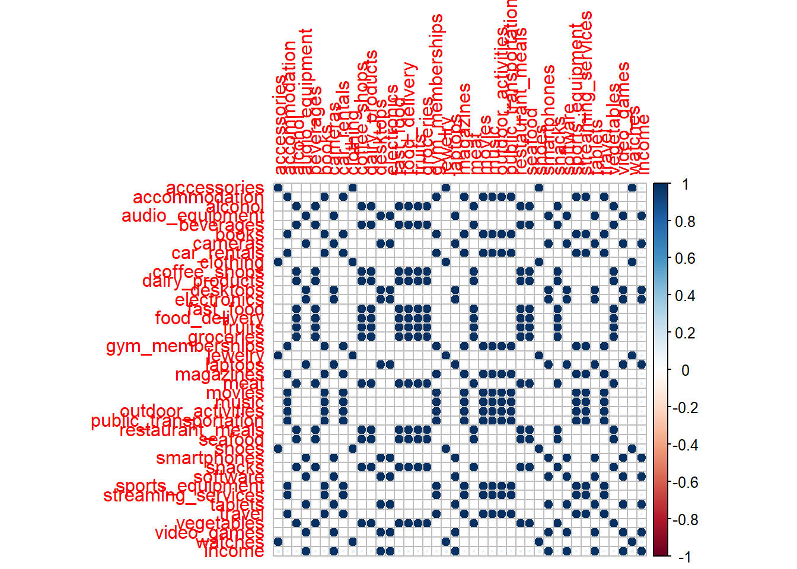
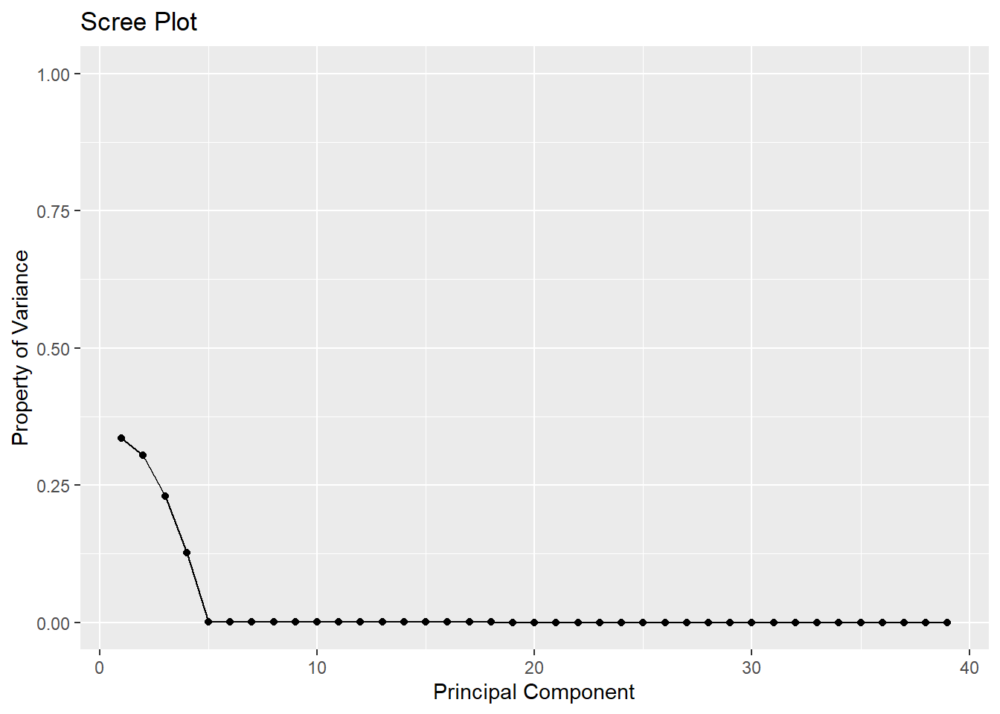
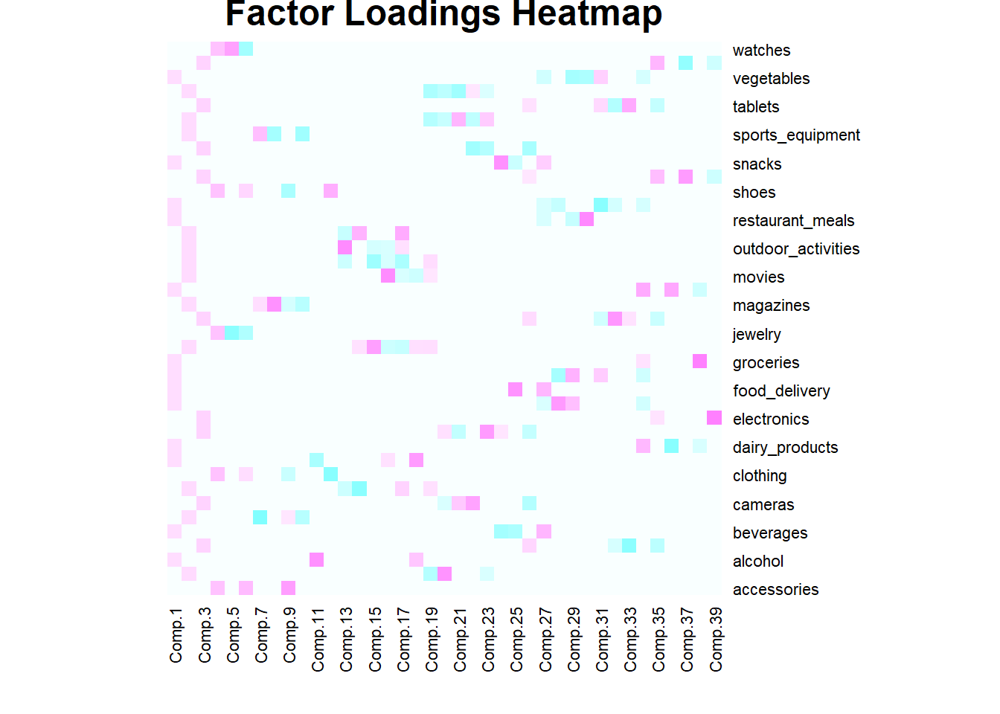

packages <- c(
"tibble",
"dplyr",
"readr",
"tidyr",
"purrr",
"broom",
"magrittr",
"corrplot",
"car"
)
# renv::install(packages)
sapply(packages, require, character.only=T)
Important
Please read the instructions carefully before submitting your assignment.
- This assignment requires you to only upload a
PDFfile on Canvas - Don’t collapse any code cells before submitting.
- Remember to make sure all your code output is rendered properly before uploading your submission.
⚠️ Please add your name to the author information in the frontmatter before submitting your assignment ⚠️
In this assignment, we will perform various tasks involving principal component analysis (PCA), principal component regression, and dimensionality reduction.
We will need the following packages:
Question 1
70 points
Principal component anlaysis and variable selection
1.1 (5 points)
The data folder contains a spending.csv dataset which is an illustrative sample of monthly spending data for a group of \(5000\) people across a variety of categories. The response variable, income, is their monthly income, and objective is to predict the income for a an individual based on their spending patterns.
Read the data file as a tibble in R. Preprocess the data such that:
- the variables are of the right data type, e.g., categorical variables are encoded as factors
- all column names to lower case for consistency
- Any observations with missing values are dropped
library(readr)
library(dplyr)
library(tidyr)
path <- "data/spending.csv"
df <- read_csv(path)Rows: 5000 Columns: 40
── Column specification ────────────────────────────────────────────────────────
Delimiter: ","
dbl (40): accessories, accommodation, alcohol, audio_equipment, beverages, b...
ℹ Use `spec()` to retrieve the full column specification for this data.
ℹ Specify the column types or set `show_col_types = FALSE` to quiet this message.df <- df %>%
mutate_all(as.numeric) %>% # Makes all numeric since there are no categorial variables
drop_na() # Assures no NAs in the data
df <- na.omit(df)
head(df)# A tibble: 6 × 40
accessories accommodation alcohol audio_equipment beverages books cameras
<dbl> <dbl> <dbl> <dbl> <dbl> <dbl> <dbl>
1 4.45 90.1 39.2 7.6 57.9 45.1 6.62
2 10.9 84.9 28.7 44.3 43.9 42.3 27.5
3 5.77 18.5 37.5 13.4 57.3 8.65 7.13
4 15.0 77.8 33.3 101. 51.9 40.6 65.9
5 26.9 12.5 10.1 82.4 14.6 6.87 55.8
6 4.49 25.7 29.5 93.8 42.2 12.7 60.6
# ℹ 33 more variables: car_rentals <dbl>, clothing <dbl>, coffee_shops <dbl>,
# dairy_products <dbl>, desktops <dbl>, electronics <dbl>, fast_food <dbl>,
# food_delivery <dbl>, fruits <dbl>, groceries <dbl>, gym_memberships <dbl>,
# jewelry <dbl>, laptops <dbl>, magazines <dbl>, meat <dbl>, movies <dbl>,
# music <dbl>, outdoor_activities <dbl>, public_transportation <dbl>,
# restaurant_meals <dbl>, seafood <dbl>, shoes <dbl>, smartphones <dbl>,
# snacks <dbl>, software <dbl>, sports_equipment <dbl>, …1.2 (5 points)
Visualize the correlation between the variables using the corrplot() function. What do you observe? What does this mean for the model?
library(corrplot)
correlation_matrix <- cor(df)
corrplot(correlation_matrix, method = "circle") #Utilizes corrplot method
Throughout the model, there are only very dark blue circles, which means there is a strong positive correlation between several of the variables with one another. Additionally, there are about half of the variables appear to have a correlation with one another. However, there are numerous white spaces, where many variables have absolutely no correlation with one another. In terms of the model, this means there will be multicollinearity, which could pose some issues for the model. However, the model will likely be highly significant since there is so much correlation.
I could not figure out how to do the df %>% outline given, so I erased that and did my own line of code.
1.3 (5 points)
Run a linear regression model to predict the income variable using the remaining predictors. Interpret the coefficients and summarize your results.
model <- lm(income ~ ., data = df) # Uses lm function
summary(model)
Call:
lm(formula = income ~ ., data = df)
Residuals:
Min 1Q Median 3Q Max
-8.6875 -1.6569 0.0427 1.6633 9.5623
Coefficients:
Estimate Std. Error t value Pr(>|t|)
(Intercept) -0.077509 0.121730 -0.637 0.524330
accessories 0.299876 0.031786 9.434 < 2e-16 ***
accommodation 0.113632 0.031262 3.635 0.000281 ***
alcohol -0.005958 0.033266 -0.179 0.857873
audio_equipment 0.602004 0.033483 17.979 < 2e-16 ***
beverages 0.043335 0.034111 1.270 0.204000
books 0.070530 0.033238 2.122 0.033892 *
cameras 0.461827 0.033572 13.756 < 2e-16 ***
car_rentals 0.124875 0.032809 3.806 0.000143 ***
clothing 0.504228 0.026055 19.352 < 2e-16 ***
coffee_shops 0.048839 0.034909 1.399 0.161864
dairy_products 0.024548 0.032715 0.750 0.453082
desktops 0.391673 0.033393 11.729 < 2e-16 ***
electronics 1.079627 0.030035 35.946 < 2e-16 ***
fast_food 0.077531 0.033014 2.348 0.018893 *
food_delivery -0.004903 0.034257 -0.143 0.886188
fruits 0.059089 0.033321 1.773 0.076237 .
groceries 0.077694 0.031601 2.459 0.013981 *
gym_memberships 0.141168 0.033410 4.225 2.43e-05 ***
jewelry 0.213726 0.032834 6.509 8.30e-11 ***
laptops 0.594328 0.032548 18.260 < 2e-16 ***
magazines 0.080762 0.033694 2.397 0.016571 *
meat 0.081262 0.032367 2.511 0.012083 *
movies 0.110296 0.033326 3.310 0.000941 ***
music 0.159925 0.033398 4.788 1.73e-06 ***
outdoor_activities 0.087846 0.032356 2.715 0.006651 **
public_transportation 0.061138 0.033022 1.851 0.064169 .
restaurant_meals 0.066129 0.033225 1.990 0.046611 *
seafood 0.061318 0.033786 1.815 0.069596 .
shoes 0.463185 0.029613 15.641 < 2e-16 ***
smartphones 0.780150 0.031538 24.737 < 2e-16 ***
snacks 0.007464 0.033229 0.225 0.822290
software 0.408500 0.034102 11.979 < 2e-16 ***
sports_equipment 0.033328 0.033969 0.981 0.326574
streaming_services 0.150614 0.031902 4.721 2.41e-06 ***
tablets 0.637266 0.033133 19.234 < 2e-16 ***
travel 0.129161 0.031457 4.106 4.09e-05 ***
vegetables -0.066111 0.033162 -1.994 0.046257 *
video_games 0.863309 0.031392 27.501 < 2e-16 ***
watches 0.145853 0.033467 4.358 1.34e-05 ***
---
Signif. codes: 0 '***' 0.001 '**' 0.01 '*' 0.05 '.' 0.1 ' ' 1
Residual standard error: 2.434 on 4960 degrees of freedom
Multiple R-squared: 0.9999, Adjusted R-squared: 0.9999
F-statistic: 1.834e+06 on 39 and 4960 DF, p-value: < 2.2e-16Three asterisks indicates the most significant coefficients, and several variables have these asterisks. Likewise, no asterisk means that the variable is not that significant. The estimate column for each variable shows the coefficients which represent the change in income for a one-unit increase in the predictor variable. So, for example, for accessories, with a coefficient of 0.299876, means that a one unit increase in spending on accessories is associated with an increase in income of about $0.30. These would be different based on the predictor, but that is a generalistic interpretation.
The R-Squared value of 0.999 indicates that the model explains almost all the variance in the income variable. The F-Statistic value of 2.2e-16 shows that the model is highly significant overall. In summary, the model is accurate and significant overall when analyzing the income variable across the predictor variables.
1.3 (5 points)
Diagnose the model using the vif() function. What do you observe? What does this mean for the model?
library(car)Loading required package: carData
Attaching package: 'car'The following object is masked from 'package:purrr':
someThe following object is masked from 'package:dplyr':
recodevif_values <- vif(model)
vif_values accessories accommodation alcohol
152.06821 681.15504 387.23376
audio_equipment beverages books
1755.56441 914.69186 192.91781
cameras car_rentals clothing
785.43147 423.55906 282.25143
coffee_shops dairy_products desktops
425.39644 2336.74847 776.75697
electronics fast_food food_delivery
3927.16511 1519.85171 921.68162
fruits groceries gym_memberships
1550.05678 3136.80325 438.30224
jewelry laptops magazines
72.38215 1658.76990 198.53619
meat movies music
2284.43676 437.28082 437.03990
outdoor_activities public_transportation restaurant_meals
411.17302 427.77815 1540.26240
seafood shoes smartphones
1594.08027 233.33301 2772.27822
snacks software sports_equipment
868.24282 810.28919 201.00255
streaming_services tablets travel
709.25592 1718.78339 690.69616
vegetables video_games watches
1536.40686 2745.64421 75.56457 Almost all variables seen above have really high VIF values, which does pose a problem. Variables with high VIF values (above 10) indicate strong multicollinearity with other predictor variables in the model. High VIF numbers can change the standard deviation and regression coefficients in the model, making them less reliable.
1.4 (5 points)
Perform PCA using the princomp function in R. Print the summary of the PCA object.
pca_no_income <- df[, !names(df) == "income"] # Finds everything except income
pca <- princomp(pca_no_income, cor = TRUE)
summary(pca)Importance of components:
Comp.1 Comp.2 Comp.3 Comp.4 Comp.5
Standard deviation 3.6201099 3.4479976 2.9939875 2.2288727 0.1125697569
Proportion of Variance 0.3360307 0.3048381 0.2298452 0.1273814 0.0003249218
Cumulative Proportion 0.3360307 0.6408688 0.8707140 0.9980954 0.9984202743
Comp.6 Comp.7 Comp.8 Comp.9
Standard deviation 0.0960605322 0.0708312069 0.0691539249 0.0670242037
Proportion of Variance 0.0002366058 0.0001286426 0.0001226222 0.0001151857
Cumulative Proportion 0.9986568801 0.9987855227 0.9989081448 0.9990233306
Comp.10 Comp.11 Comp.12 Comp.13
Standard deviation 0.0653196274 5.099363e-02 0.0498072940 4.762347e-02
Proportion of Variance 0.0001094014 6.667565e-05 0.0000636094 5.815371e-05
Cumulative Proportion 0.9991327320 9.991994e-01 0.9992630170 9.993212e-01
Comp.14 Comp.15 Comp.16 Comp.17
Standard deviation 0.0469865879 4.611213e-02 0.0459026903 4.552808e-02
Proportion of Variance 0.0000566087 5.452125e-05 0.0000540271 5.314888e-05
Cumulative Proportion 0.9993777794 9.994323e-01 0.9994863278 9.995395e-01
Comp.18 Comp.19 Comp.20 Comp.21
Standard deviation 4.516751e-02 3.944038e-02 0.0358645643 3.505209e-02
Proportion of Variance 5.231037e-05 3.988573e-05 0.0000329812 3.150383e-05
Cumulative Proportion 9.995918e-01 9.996317e-01 0.9996646540 9.996962e-01
Comp.22 Comp.23 Comp.24 Comp.25
Standard deviation 3.460809e-02 3.435268e-02 3.297822e-02 3.240319e-02
Proportion of Variance 3.071076e-05 3.025915e-05 2.788623e-05 2.692223e-05
Cumulative Proportion 9.997269e-01 9.997571e-01 9.997850e-01 9.998119e-01
Comp.26 Comp.27 Comp.28 Comp.29
Standard deviation 3.135574e-02 2.976920e-02 2.508623e-02 2.460025e-02
Proportion of Variance 2.520981e-05 2.272321e-05 1.613638e-05 1.551723e-05
Cumulative Proportion 9.998371e-01 9.998599e-01 9.998760e-01 9.998915e-01
Comp.30 Comp.31 Comp.32 Comp.33
Standard deviation 2.426600e-02 2.374599e-02 2.334190e-02 2.283049e-02
Proportion of Variance 1.509843e-05 1.445825e-05 1.397036e-05 1.336491e-05
Cumulative Proportion 9.999066e-01 9.999211e-01 9.999350e-01 9.999484e-01
Comp.34 Comp.35 Comp.36 Comp.37
Standard deviation 2.119139e-02 1.968544e-02 1.937808e-02 1.742835e-02
Proportion of Variance 1.151475e-05 9.936319e-06 9.628464e-06 7.788395e-06
Cumulative Proportion 9.999599e-01 9.999699e-01 9.999795e-01 9.999873e-01
Comp.38 Comp.39
Standard deviation 1.677847e-02 1.464440e-02
Proportion of Variance 7.218385e-06 5.498931e-06
Cumulative Proportion 9.999945e-01 1.000000e+001.5 (5 points)
Make a screeplot of the proportion of variance explained by each principal component. How many principal components would you choose to keep? Why?
prop_var <- pca$sdev^2 / sum(pca$sdev^2) # Calculates proportion of variance
library(ggplot2)
qplot(c(1:length(prop_var)), prop_var) +
geom_line() +
xlab("Principal Component") +
ylab("Property of Variance") +
ggtitle("Scree Plot") +
ylim(0, 1)Warning: `qplot()` was deprecated in ggplot2 3.4.0.
Based on the plot, I would keep the first two principal components, since after the second component, there is a clear elbow, which means that additional components contribute less to the variance of the data, and therefore should not be kept. By gathering these two components, we can capture the majority of the variance and presevere the necessary information.
1.6 (5 points)
By setting any factor loadings below \(0.2\) to \(0\), summarize the factor loadings for the principal components that you chose to keep.
factor_loadings <- pca$loadings # Finds factor loadings
factor_loadings[abs(factor_loadings) < 0.2] <- 0 # Filters factor loadings as given in assignment requirements
factor_loadings
Loadings:
Comp.1 Comp.2 Comp.3 Comp.4 Comp.5 Comp.6 Comp.7 Comp.8
accessories 0.447 0.495
accommodation 0.277
alcohol 0.266
audio_equipment 0.332
beverages 0.266
books 0.276 -0.821
cameras 0.332
car_rentals 0.277
clothing 0.448 0.265
coffee_shops 0.266
dairy_products 0.266
desktops 0.332
electronics 0.332
fast_food 0.266
food_delivery 0.266
fruits 0.266
groceries 0.266
gym_memberships 0.277
jewelry 0.446 -0.741 -0.491
laptops 0.332
magazines 0.276 0.259 0.772
meat 0.266
movies 0.277
music 0.277
outdoor_activities 0.277
public_transportation 0.277
restaurant_meals 0.266
seafood 0.266
shoes 0.448 0.314
smartphones 0.332
snacks 0.266
software 0.332
sports_equipment 0.276 0.468 -0.566
streaming_services 0.277
tablets 0.332
travel 0.277
vegetables 0.266
video_games 0.332
watches 0.446 0.669 -0.585
Comp.9 Comp.10 Comp.11 Comp.12 Comp.13 Comp.14 Comp.15
accessories 0.693
accommodation
alcohol 0.787
audio_equipment
beverages
books 0.204 -0.441
cameras
car_rentals -0.299 -0.747
clothing -0.318 -0.755
coffee_shops -0.538
dairy_products
desktops
electronics
fast_food
food_delivery
fruits
groceries
gym_memberships 0.239 0.683
jewelry
laptops
magazines -0.240 -0.438
meat
movies
music -0.300 -0.607
outdoor_activities 0.815 -0.245
public_transportation -0.337 0.545
restaurant_meals
seafood
shoes -0.537 0.580
smartphones
snacks
software
sports_equipment -0.598
streaming_services
tablets
travel
vegetables
video_games
watches
Comp.16 Comp.17 Comp.18 Comp.19 Comp.20 Comp.21 Comp.22
accessories
accommodation -0.463 0.760
alcohol 0.422
audio_equipment
beverages
books
cameras -0.214 0.397 0.657
car_rentals 0.330 0.241
clothing
coffee_shops 0.237 0.708
dairy_products
desktops 0.243 -0.367
electronics
fast_food
food_delivery
fruits
groceries
gym_memberships -0.299 -0.343 0.250 0.260
jewelry
laptops
magazines
meat
movies 0.807 -0.221 -0.294 0.206
music -0.226 -0.525 0.262
outdoor_activities -0.221 0.241
public_transportation 0.602
restaurant_meals
seafood
shoes
smartphones
snacks
software -0.593
sports_equipment
streaming_services -0.455 -0.332 0.526 -0.387
tablets
travel -0.518 -0.409 -0.595 0.201
vegetables
video_games
watches
Comp.23 Comp.24 Comp.25 Comp.26 Comp.27 Comp.28 Comp.29
accessories
accommodation -0.215
alcohol
audio_equipment 0.308
beverages -0.567 -0.519 0.523
books
cameras -0.472
car_rentals
clothing
coffee_shops
dairy_products
desktops 0.717 0.214 -0.355
electronics
fast_food -0.214 0.724 0.463
food_delivery 0.769 0.522
fruits -0.554 0.550
groceries
gym_memberships
jewelry
laptops 0.275
magazines
meat
movies
music
outdoor_activities
public_transportation
restaurant_meals -0.221 -0.340
seafood -0.222 -0.345
shoes
smartphones 0.201
snacks 0.771 -0.315 0.362
software -0.462 -0.540
sports_equipment
streaming_services 0.383
tablets 0.237
travel -0.200
vegetables -0.274 -0.561
video_games
watches
Comp.30 Comp.31 Comp.32 Comp.33 Comp.34 Comp.35 Comp.36
accessories
accommodation
alcohol
audio_equipment -0.234 -0.728 -0.415
beverages
books
cameras
car_rentals
clothing
coffee_shops
dairy_products 0.510 -0.758
desktops
electronics 0.222
fast_food -0.270
food_delivery
fruits 0.378 -0.279
groceries 0.231
gym_memberships
jewelry
laptops -0.264 0.743 0.232 -0.319
magazines
meat 0.606 0.628
movies
music
outdoor_activities
public_transportation
restaurant_meals 0.837
seafood -0.748 -0.255 -0.242
shoes
smartphones 0.481
snacks
software
sports_equipment
streaming_services
tablets 0.289 -0.470 0.606 -0.352
travel
vegetables -0.506 0.354 -0.242
video_games 0.527
watches
Comp.37 Comp.38 Comp.39
accessories
accommodation
alcohol
audio_equipment
beverages
books
cameras
car_rentals
clothing
coffee_shops
dairy_products -0.217
desktops
electronics 0.897
fast_food
food_delivery
fruits
groceries 0.899
gym_memberships
jewelry
laptops
magazines
meat -0.286
movies
music
outdoor_activities
public_transportation
restaurant_meals
seafood
shoes
smartphones 0.706 -0.295
snacks
software
sports_equipment
streaming_services
tablets
travel
vegetables
video_games -0.681 -0.286
watches
Comp.1 Comp.2 Comp.3 Comp.4 Comp.5 Comp.6 Comp.7 Comp.8 Comp.9
SS loadings 0.919 0.919 0.990 0.999 0.996 0.997 0.960 0.916 0.970
Proportion Var 0.024 0.024 0.025 0.026 0.026 0.026 0.025 0.023 0.025
Cumulative Var 0.024 0.047 0.072 0.098 0.124 0.149 0.174 0.197 0.222
Comp.10 Comp.11 Comp.12 Comp.13 Comp.14 Comp.15 Comp.16 Comp.17
SS loadings 0.744 0.910 0.906 0.957 0.911 0.896 0.896 0.972
Proportion Var 0.019 0.023 0.023 0.025 0.023 0.023 0.023 0.025
Cumulative Var 0.241 0.265 0.288 0.312 0.336 0.359 0.382 0.407
Comp.18 Comp.19 Comp.20 Comp.21 Comp.22 Comp.23 Comp.24 Comp.25
SS loadings 0.828 0.927 0.959 0.923 0.973 0.961 0.963 0.960
Proportion Var 0.021 0.024 0.025 0.024 0.025 0.025 0.025 0.025
Cumulative Var 0.428 0.452 0.476 0.500 0.525 0.549 0.574 0.599
Comp.26 Comp.27 Comp.28 Comp.29 Comp.30 Comp.31 Comp.32 Comp.33
SS loadings 0.907 0.896 0.950 0.947 0.957 0.981 0.893 0.950
Proportion Var 0.023 0.023 0.024 0.024 0.025 0.025 0.023 0.024
Cumulative Var 0.622 0.645 0.669 0.694 0.718 0.743 0.766 0.791
Comp.34 Comp.35 Comp.36 Comp.37 Comp.38 Comp.39
SS loadings 0.949 0.956 0.968 0.962 0.938 0.973
Proportion Var 0.024 0.025 0.025 0.025 0.024 0.025
Cumulative Var 0.815 0.839 0.864 0.889 0.913 0.938The factor loadings represent the correlation between each variable and the principal component, and the higher the value, the higher the correlation. Since I chose to keep components 1 and 2, I will be discussing those. For component 1, the variables of accessories, audio equipment, cameras, and clothing have relatively high numbers, suggesting that they correlate strongly to this component. For componenet 2, the variables of books and clothing have high loadings, meaning they likely contribute to this component.
Visualize the factor loadings.
heatmap(factor_loadings,
Rowv = NA, Colv = NA,
col = cm.colors(256),
scale = "none",
main = "Factor Loadings Heatmap")
1.7 (15 points)
Based on the factor loadings, what do you think the principal components represent?
Provide an interpretation for each principal component you chose to keep.
I chose to do a heat map to visualize the factor loadings. The pink in this case means positive correlation, and the blue means negative correlation. The darker the color, the more correlated two items are. Based on the factor loadings, I think the components likely represent how different variables are connected or just a general connection between them.
For component 1, the principal components represent patterns related to personal items and technology, since the variables of accessories, clothing, laptops, smartphones, and tablets all have high loadings and correlation to component 1. For component 2, which has high loadings for magazines and movies, there are patterns related to media and entertainment consumption. As you can see with the heatmap, component 1 has numerous different correlations with different variables, meaning that there would be lots of different patterns to look for between the variables.
1.8 (10 points)
Create a new data frame with the original response variable income and the principal components you chose to keep. Call this data frame df_pca.
num_components <- 2
pca_components <- pca$scores[, 1:num_components]
df_pca <- data.frame(income = df$income, pca_components) # Does pca with income
head(df_pca) income Comp.1 Comp.2
1 198.79 1.9482067 4.774097
2 423.35 -0.1336445 4.355272
3 154.83 -0.7641850 -3.424712
4 799.07 0.8123437 3.262874
5 617.97 -5.5881896 -3.177685
6 680.76 -1.9700421 -2.447838Fit a regression model to predict the income variable using the principal components you chose to keep. Interpret the coefficients and summarize your results.
pca_lm_model <- lm(income ~ ., data = df_pca)
summary(pca_lm_model)
Call:
lm(formula = income ~ ., data = df_pca)
Residuals:
Min 1Q Median 3Q Max
-571.26 -243.23 1.85 245.02 603.79
Coefficients:
Estimate Std. Error t value Pr(>|t|)
(Intercept) 628.178 4.060 154.731 <2e-16 ***
Comp.1 13.336 1.121 11.891 <2e-16 ***
Comp.2 -1.163 1.177 -0.988 0.323
---
Signif. codes: 0 '***' 0.001 '**' 0.01 '*' 0.05 '.' 0.1 ' ' 1
Residual standard error: 287.1 on 4997 degrees of freedom
Multiple R-squared: 0.0277, Adjusted R-squared: 0.02731
F-statistic: 71.19 on 2 and 4997 DF, p-value: < 2.2e-16For component 1, a one-unit increase in the first principal component results in an approximate 13 dollar increase in income. For component 2, a one-unit increase is associated with approximately a dollar decrease in income. The R-Squared value of 0.0277 means that not a lot of the variance in the income variable is explained by the principal components in the model. The p-value and the F-statistic show that the model is highly significant.
In summary, this model has high significance, but a low R-Squared value, which could hinder its accuracy.
Compare the results of the regression model in 1.3 and 1.9. What do you observe? What does this mean for the model?
r_squared_original <- summary(model)$r.squared
r_squared_pca <- summary(pca_lm_model)$r.squared
coefficients_original <- coef(model)[-1]
coefficients_pca <- coef(pca_lm_model)[-1]
r_squared_original[1] 0.9999306r_squared_pca[1] 0.02770383coefficients_original accessories accommodation alcohol
0.299875865 0.113631889 -0.005957650
audio_equipment beverages books
0.602004277 0.043334771 0.070529901
cameras car_rentals clothing
0.461827433 0.124875269 0.504227701
coffee_shops dairy_products desktops
0.048838867 0.024547883 0.391673067
electronics fast_food food_delivery
1.079627367 0.077531334 -0.004903459
fruits groceries gym_memberships
0.059089415 0.077693523 0.141167991
jewelry laptops magazines
0.213725668 0.594327858 0.080762296
meat movies music
0.081261617 0.110295812 0.159924893
outdoor_activities public_transportation restaurant_meals
0.087845579 0.061137994 0.066128937
seafood shoes smartphones
0.061318141 0.463184898 0.780149570
snacks software sports_equipment
0.007463637 0.408500423 0.033328006
streaming_services tablets travel
0.150613888 0.637266044 0.129160913
vegetables video_games watches
-0.066110811 0.863308862 0.145852858 coefficients_pca Comp.1 Comp.2
13.33571 -1.16303 I observe that the R-Squared value for the original model is a lot closer to 1 than for the pca model. I’m not sure if this was what was supposed to happen, but that is what my results are showing. This means that the original model would be a better fit for determining different conclusions accurately for the data. Originally, my R-Squared for the pca model was 0.994, so very close and very similar and very accurate, though when I ran the code chunk again, it was significantly lower.
1.10 (10 points)
Based on your interpretation of the principal components from Question 1.7, provide an interpretation of the regression model in Question 1.9.
Based on the principal components, the regression model in Question 1.9 does not appear to be a great fit. Though the components 1 and 2 were meaningful in terms of the data, my Question 1.9 does not support this and provides a different conclusion. Originally, my R-Squared for the pca model was 0.994, so very close and very similar and very accurate, though when I ran the code chunk again, it was significantly lower.
Session Information
Print your R session information using the following command
sessionInfo()R version 4.3.2 (2023-10-31 ucrt)
Platform: x86_64-w64-mingw32/x64 (64-bit)
Running under: Windows 11 x64 (build 22631)
Matrix products: default
locale:
[1] LC_COLLATE=English_United States.utf8
[2] LC_CTYPE=English_United States.utf8
[3] LC_MONETARY=English_United States.utf8
[4] LC_NUMERIC=C
[5] LC_TIME=English_United States.utf8
time zone: America/New_York
tzcode source: internal
attached base packages:
[1] stats graphics grDevices utils datasets methods base
other attached packages:
[1] ggplot2_3.4.4 car_3.1-2 carData_3.0-5 corrplot_0.92 magrittr_2.0.3
[6] broom_1.0.5 purrr_1.0.2 tidyr_1.3.0 readr_2.1.4 dplyr_1.1.4
[11] tibble_3.2.1
loaded via a namespace (and not attached):
[1] utf8_1.2.4 generics_0.1.3 hms_1.1.3 digest_0.6.33
[5] evaluate_0.23 grid_4.3.2 fastmap_1.1.1 jsonlite_1.8.7
[9] backports_1.4.1 fansi_1.0.5 scales_1.2.1 codetools_0.2-19
[13] abind_1.4-5 cli_3.6.1 rlang_1.1.2 crayon_1.5.2
[17] bit64_4.0.5 munsell_0.5.0 withr_2.5.2 yaml_2.3.7
[21] tools_4.3.2 parallel_4.3.2 tzdb_0.4.0 colorspace_2.1-0
[25] vctrs_0.6.4 R6_2.5.1 lifecycle_1.0.4 htmlwidgets_1.6.2
[29] bit_4.0.5 vroom_1.6.4 pkgconfig_2.0.3 pillar_1.9.0
[33] gtable_0.3.4 glue_1.6.2 xfun_0.41 tidyselect_1.2.0
[37] rstudioapi_0.15.0 knitr_1.45 farver_2.1.1 htmltools_0.5.7
[41] rmarkdown_2.25 labeling_0.4.3 compiler_4.3.2